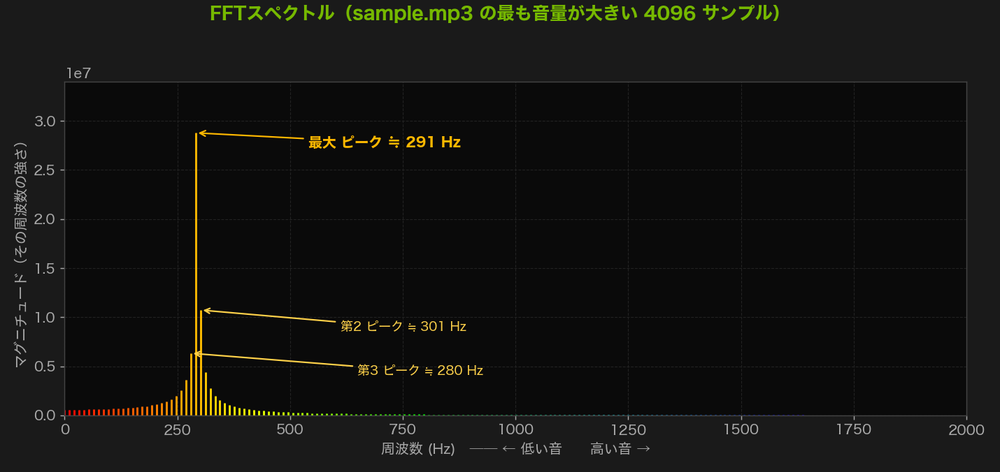
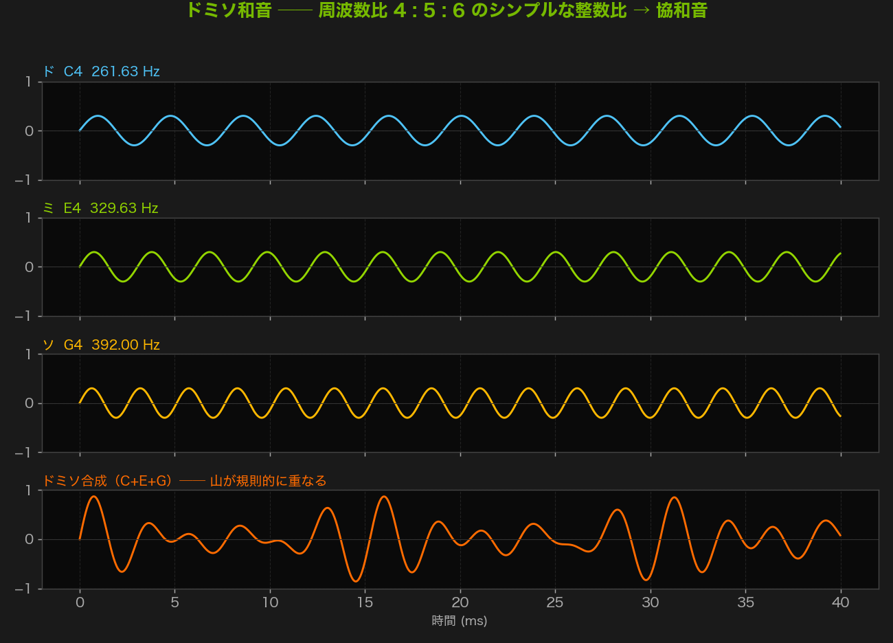
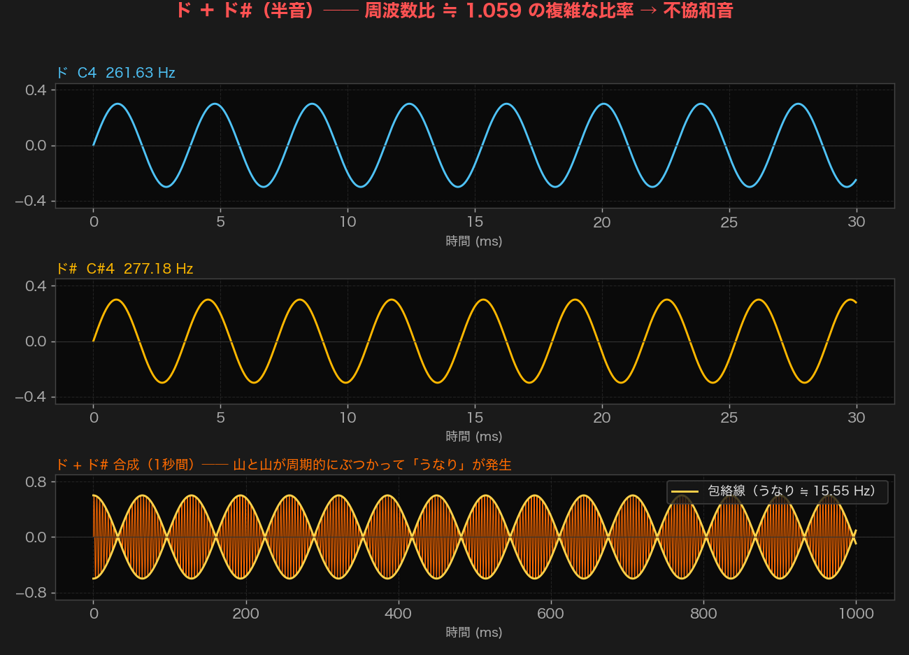
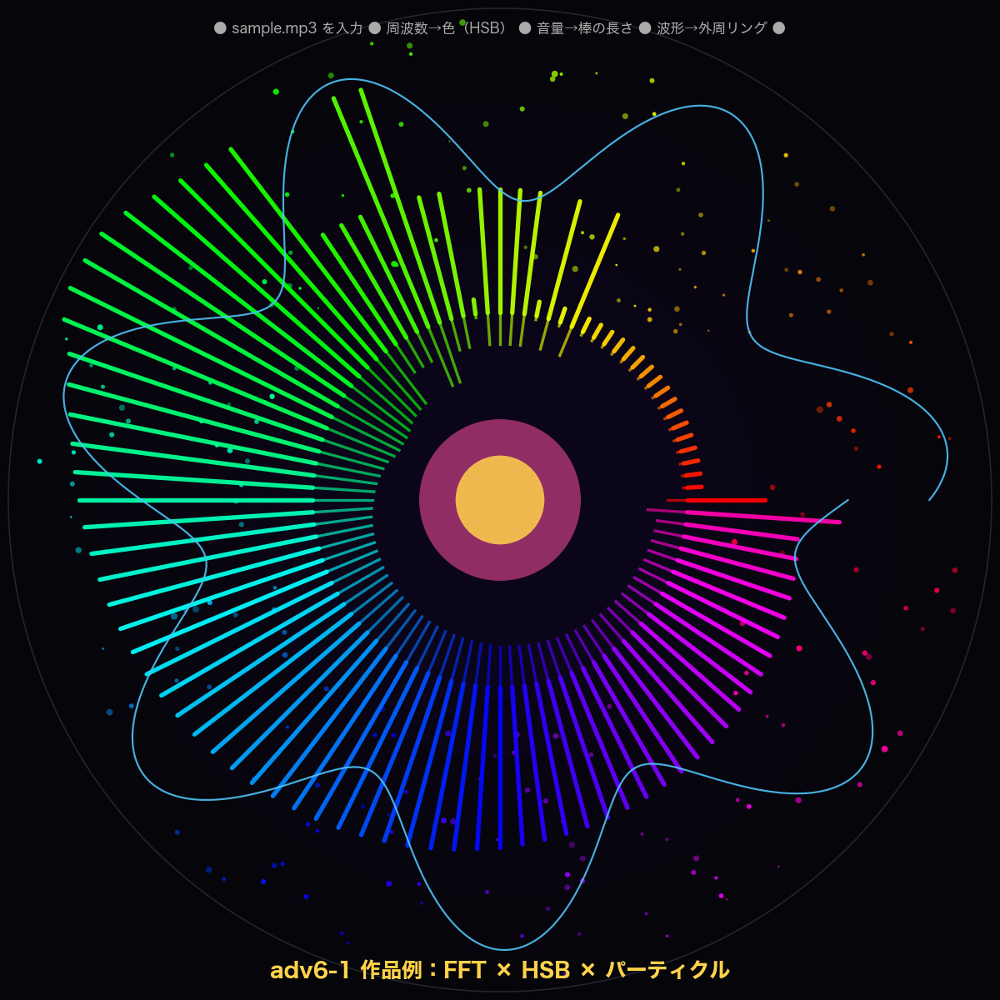

武蔵野大学データサイエンス学部
武蔵野大学国際データサイエンス学部（通信教育部）
中村 亮太
pydubで音を生成・再生し、FFTで周波数成分を可視化する
この1ページに Task 0（予習）・Task 1（口頭試問）・std6-3（サウンドペインター） を記入し，PDF にエクスポートして提出する（std6-1 / std6-2 は .py を Classroom に提出）．
Notion テンプレート ── 第6回まとめ# 第6回 提出レポート（音のプログラミングとFFT）
氏名:
学籍番号:
グループ:
---
## Task 0 予習で分からなかった点
- 0-1（音のデジタル化・サンプリング）:
- 0-2（周波数と正弦波）:
- 0-3（FFT）:
- 0-4（和音と周波数比）:
※ 1つも無ければ「分からない点なし」と記載
---
## Task 1 口頭試問 判定結果
誰が何を出題し，誰が回答し，○か×かを表で記録する（回答者は毎回「左隣の人」）．
### 第1回（口頭試問1）── 音のデジタル化・正弦波
| 出題者 | 問題番号 | 回答者（左隣） | 判定 |
|--------|----------|----------------|------|
| | Q | | ○/× |
| | Q | | ○/× |
| | Q | | ○/× |
| | Q | | ○/× |
### 第2回（口頭試問2）── FFT・和音
| 出題者 | 問題番号 | 回答者（左隣） | 判定 |
|--------|----------|----------------|------|
| | Q | | ○/× |
| | Q | | ○/× |
| | Q | | ○/× |
| | Q | | ○/× |
### グループでの気づき・SAに質問したいこと
-
---
## std6-3 サウンドペインター レポート
- 使った音源（曲名・長さ）:
- 音のどの特徴を使ったか（周波数 / 音量 / テンポ など）:
- 特徴 → 絵（色・サイズ・速度）へのマッピング:
- 工夫した点:
- 結果のスクリーンショット:（画像を貼り付け）
- 考察（意図どおり描けたか・改善点）:
- 完成した Python コード:
```python
```
必ず予習して授業に参加すること。授業では予習で学んだことを話し合います。講師からも ランダムに口頭試問 します。回答できるように準備してください。
「音」って結局なに？ なぜ 0と1のコンピュータ で音を扱えるの？ ここでは大きく 2段階 で理解する：
[A] 音をコンピュータで扱えるまで（A/D変換）
① 空気の振動 → ② アナログ信号 → ③ 標本化 → ④ 量子化 → ⑤ 符号化 ── ここまでで音は 0と1の数字の列（デジタルデータ） になる。
[B] デジタル化された音を「分析」する
⑥ 正弦波の合成 → ⑦ 周波数 → ⑧ FFT ── どんな音もシンプルな波の足し算で表せる，という見方を学ぶ。
図とアニメは くり返し再生 される。
太鼓を叩くと膜が震え，まわりの 空気を押したり引いたり する。すると空気の分子が 混んでいる場所（密） と すいている場所（疎） が交互にできて，それが波になって耳まで伝わる。これが 音波（疎密波）。音を伝えているのは空気そのもので，空気が無い宇宙では音は聞こえない。
空気の密度の変化（音の強さ）を時間で測ってグラフにすると，つるんと連続したなめらかな曲線 になる。このように とぎれめなく，いくらでも細かい中間の値を取れる 信号を アナログ信号 という。マイクは空気の振動をそのまま電気の電圧の波（アナログ）に変える。
コンピュータはなめらかな曲線をそのまま覚えられない。そこで 一定の時間間隔でストップウォッチを押すように波の高さを測定 していく。これが 標本化（サンプリング）。「1秒間に何回測るか」を サンプリング周波数 という。
YouTube や CD の音は 44,100Hz ＝ 1秒間に44,100回 も測っている。回数が多いほど元のなめらかな波に近づく（＝高音質）。
標本化で測った高さは中途半端な値（例：3.7段目）になる。これを あらかじめ決めた段階の，いちばん近い値に置きかえる のが 量子化。「何段階で表すか」を 量子化ビット数 という。
CD は 16bit ＝ 216 ＝ 65,536段階。段階が多いほど元の値とのズレが小さくなり，なめらかでノイズの少ない音になる。（このあと ⑤ 符号化 で，各段階に 0/1 の番号を割り当ててコンピュータの数字に変える。）
標本化（③）で時間をきざみ，量子化（④）で高さを「いちばん近い段階」にそろえた。最後に，各段階に 0と1だけで書いた番号（2進数） をふる作業が 符号化（エンコード）。これで音は 0と1の数字の列 になり，コンピュータが扱える デジタルデータ になる。
たとえば 3bit なら 8段階で 000, 001, 010, …, 111。CD のように 16bit なら 65,536段階 に 0000000000000000〜1111111111111111 を割り当てる。スピーカーで音を鳴らすときは，この数字の列を逆向きにたどってアナログの波に戻す（D/A変換）。
正弦波 は，円のまわりを一定の速さで回る点の高さを描いた，最もシンプルでなめらかな波（y = A sin(2πt/T)，A＝振幅＝音の大きさ，T＝周期）。1つの正弦波は「ポー」という澄んだ純音。
事実： 高さ（周波数）のちがう正弦波を何本も 足し合わせる と，どんなに複雑な波形でも作れる。つまり 正弦波は音のレゴブロック。楽器の音も人の声も，正弦波の組み合わせで表せる（フーリエの考え方）。
周波数 は「1秒間に波が何回くり返すか」で，単位は Hz（ヘルツ）。波がこまかく速くくり返す（周波数が高い）ほど 音は高く，ゆっくりだと 低く 聞こえる。
音はすべて波。その波の 3つの性質 で，聞こえ方が決まる。
2つ以上の音を同時に鳴らすと 和音 になる。周波数の比が シンプルな整数比 に近いほど，波の山が規則的に重なって 協和（美しく） 聞こえる。比が複雑だと山がずれて干渉し，不協和（濁って・うなって） 聞こえる。
| 音名 | 周波数 (Hz) | ド基準の比 | 近似整数比 |
|---|---|---|---|
| ド (C4) | 261.63 | 1.00 | 1 |
| ミ (E4) | 329.63 | 1.26 | 5/4 |
| ソ (G4) | 392.00 | 1.50 | 3/2 |
ミ/ド ≈ 5/4，ソ/ド ≈ 3/2 → ドミソは 4 : 5 : 6 の協和音。いっぽう ド＋ド#（半音） は ド#/ド ≈ 1.06 という複雑な比で 不協和。
⑥で見たように，複雑な音は正弦波の足し算でできている。逆に 「この音にはどの高さ（周波数）の正弦波がどれだけ入っているか」 を計算で求めるのが フーリエ変換。それを高速に行うアルゴリズムが FFT（高速フーリエ変換）。
FFT を通すと，時間で並んだ波（時間領域） が 周波数で並んだ棒グラフ（周波数領域＝スペクトル） に変わる。横軸＝周波数，縦軸＝その成分の大きさ（音量）。声紋分析や音楽の可視化に使われる。
fft[:WINDOW // 2]）： FFT の結果は 左右対称（折り返し） になり，後半は前半の 鏡像 で新しい情報を持たない。だから 前半だけ 取れば十分（残り半分は捨てる）。// は 整数の割り算（小数点以下を切り捨て）。例：4096 // 2 = 2048，7 // 2 = 3。配列の要素番号は整数でなければならないので，ふつうの /（結果が 2048.0 のような小数になる）ではなく // を使う。WINDOW = 4096）： FFT（＝高速フーリエ変換）は，一度に解析する点数（窓のサイズ）が 2のべき乗（…1024・2048・4096…）のとき 最も速く計算 できる仕組み。だから中途半端な数ではなく 4096 などを使う。空気の振動（①）→ なめらかな波＝アナログ（②）→ 時間をとびとびに＝標本化（③）→ 高さをとびとびに＝量子化（④）→ 各段階を 0と1へ符号化 → デジタルデータの完成。この「アナログ → デジタル」の流れ全体を AD変換（Analog→Digital）という。逆に，再生するときは デジタルデータをスピーカーで空気の振動に戻す＝DA変換（Digital→Analog）。
音を 0 と 1 に符号化したのと同じように，テキスト・画像・動画 も，コンピュータの中では すべて 0 と 1 の数字の並び で表されている。違うのは「どんなルールで数字に直すか」だけ。だからコンピュータは，文字も写真も音楽も動画も 同じ 0/1 のデータ として保存・コピー・送信できる。
⑥⑦⑧は，デジタル化とは 別のテーマ。すでにある（または作った）デジタルの音を 作り出したり・調べたり する技術。
上の「音のしくみ」を読んだら，次の問いに自分の言葉で答えられるか確認しよう（口頭試問でも同じ範囲から出る）。
ヒントの場所：Q1→③標本化／Q2→⑦周波数・音の三要素／Q3→⑧FFT／Q4→「和音と周波数比」パネル。
Q1. サンプリングレート 44,100Hz は何を意味するか？ レートを下げると音はどうなる？
Q2. 正弦波生成コードの frequency を 440 から 880 に変えると音はどう変わるか？
Q3. FFT結果で fft[:WINDOW // 2] と前半だけ使うのはなぜか？
Q4. ドミソが美しく響くのはなぜか？ ド＋ド#はなぜ濁って聞こえるか？
予習資料（0-1〜0-4）を読んで 分からなかった点をリストアップ せよ．用語・コード・図の何でも可．1つも分からない点が無ければ「分からない点なし」と明記 する．
Notion テンプレート ── Task 0## Task 0 予習で分からなかった点
- 0-1（音のデジタル化・サンプリング）:
- 0-2（周波数と正弦波）:
- 0-3（FFT）:
- 0-4（和音と周波数比）:
※ 1つも無ければ「分からない点なし」と記載
本日の演習の 土台は予習で学んだ「音のしくみ」．書ける／読めるだけでなく 言葉で説明できる ことをグループで確認する．第1回（基本5問）→ 第2回（応用5問） の2ラウンド実施．各回で 5問すべてに必ず回答する（人数に応じて1人あたりの回答回数が変わる ── 下表）．
| グループ人数 | 回答の割り当て | 例 |
|---|---|---|
| 5人 | 全員1回ずつ | A→Q1, B→Q2, C→Q3, D→Q4, E→Q5 |
| 4人 | 1人が2回，3人が1回 | A→Q1, B→Q2, C→Q3, D→Q4, A→Q5 |
| 3人 | 2人が2回，1人が1回 | A→Q1, B→Q2, C→Q3, A→Q4, B→Q5 |
| 2人 | 1人が3回，もう1人が2回 | A→Q1, B→Q2, A→Q3, B→Q4, A→Q5 |
出題者は左隣に回るので，5問終わると自然に役割が一巡 するように設計されている．
図は 上から見たグループ配置．Aさんが中央を向いて座っているとき，Aさんの左手側 は図の 右側 にあたる．これがAさんの「左隣の人（=Bさん）」．
Q1. 「音」って結局なに？ 一言で答えよ．
Q2. アナログ と デジタル の違いを一言で言うと？
Q3. 標本化（サンプリング） では何をしている？ 一言で答えよ．
Q4. 音の高さ（高い／低い）は波の何で決まる？ その単位は？
Q5. 「ラ」440Hz の音を 1オクターブ上 げると何 Hz になる？
Q6. FFT を一言で言うと何をする手法？
Q7. FFT を使うと，音について 何が分かる ？
Q8. 純音（じゅんおん）と 和音 の違いを一言で言うと？
Q9. ドミソ が美しく聞こえるのは，3つの音の 周波数の比 がどうなっているから？
Q10. ド と ド# を同時に鳴らすと「濁って」聞こえる．なぜ？
誰が何を出題し，誰が回答し，○か×か を 表形式 で記録する．第1回・第2回 それぞれ分けて記入．
| ラウンド | 出題者 | 問題番号 | 回答者（左隣） | 判定 |
|---|---|---|---|---|
| 第1回 | 田中 | Q1 | 佐藤 | ○ |
| 第1回 | 佐藤 | Q3 | 鈴木 | × |
| 第2回 | 鈴木 | Q7 | 山田 | ○ |
| ... | ... | ... | ... | ... |
Notion テンプレート ── Task 1## Task 1 口頭試問 判定結果
### 第1回（口頭試問1）── 音のデジタル化・正弦波（5問すべて埋める）
| 出題者 | 問題番号 | 回答者（左隣） | 判定 |
|--------|----------|----------------|------|
| | Q1 | | ○/× |
| | Q2 | | ○/× |
| | Q3 | | ○/× |
| | Q4 | | ○/× |
| | Q5 | | ○/× |
### 第2回（口頭試問2）── FFT・和音（5問すべて埋める）
| 出題者 | 問題番号 | 回答者（左隣） | 判定 |
|--------|----------|----------------|------|
| | Q6 | | ○/× |
| | Q7 | | ○/× |
| | Q8 | | ○/× |
| | Q9 | | ○/× |
| | Q10 | | ○/× |
### グループでの気づき・SAに質問したいこと
-
予習で学んだ知識を使い，下の実習ステップを順に進めながら 3つの標準課題 を完成させる。まず環境を整えてから Step 1 へ。
今回使用する pydub は Python 3.12 との互換性に問題があるため、Python 3.10.x で仮想環境を作り直してください。（ffmpeg は前回の演習でインストール済み）
Bash ── 環境構築 cd ~/MD1 mkdir no6 cd no6 uv venv --python 3.10 source .venv/bin/activate uv pip install pydub py5 simpleaudio # VSCode を no6 フォルダで開く code .
ffmpeg は動画・音声を変換するコマンドラインツールです。pydubがMP3やWAVなどのファイルを読み書きするために内部で使用します。前回の演習でインストール済みのため，今回あらためてインストールする必要はありません（未インストールの場合のみ brew install ffmpeg を実行）。
標準課題で使う sample.mp3（ドレミ＋和音・約5秒）をダウンロードし，no6 フォルダの中に置いてください。コードからは "sample.mp3" で読み込みます。
step1_mp3.pypydub は音声ファイルをPythonで簡単に扱うためのライブラリです。MP3、WAV、OGGなど様々な形式に対応しています。音声データは AudioSegment オブジェクトとして扱います。
まず、適当なMP3ファイルを ~/MD1/no6/ に配置してください。フリー音源サイトからダウンロードしたものでOKです。
Python ── MP3再生 from pydub import AudioSegment from pydub.playback import play # MP3ファイルを読み込む audio = AudioSegment.from_file("sample.mp3") # 音声情報を表示 print(f"長さ: {len(audio)}ミリ秒") print(f"チャンネル数: {audio.channels}") print(f"サンプリングレート: {audio.frame_rate}Hz") print(f"ビット深度: {audio.sample_width * 8}bit") # 再生 play(audio)
len(audio) → 長さ（ミリ秒）audio[:5000] → 最初の5秒を切り出しaudio + audio2 → 2つの音声を連結audio.apply_gain(-10) → 音量を10dB下げるaudio.overlay(audio2) → 2つの音声を重ねるaudio.export("output.wav", format="wav") → ファイルに保存読み込んだMP3を加工して再生してみましょう。
Python ── 音声加工の練習 from pydub import AudioSegment from pydub.playback import play audio = AudioSegment.from_file("sample.mp3") # 最初の3秒だけ切り出す clip = audio[:3000] # 逆再生 reversed_clip = clip.reverse() # 元の音 → 逆再生を連結 combined = clip + reversed_clip play(combined)
MP3ファイルの読み込みと加工を試しましょう。切り出す長さや音量 (apply_gain) を変えてみてください。結果の音声情報をNotionに記録してください。
step2_sine.pyPython ── 正弦波の生成 import numpy as np from pydub import AudioSegment from pydub.playback import play def create_sine_wave(frequency, duration_ms, sample_rate=44100): """指定した周波数・長さの正弦波を生成する""" num_samples = int(sample_rate * duration_ms / 1000) t = np.linspace(0, duration_ms / 1000, num_samples) wave = np.sin(2 * np.pi * frequency * t) wave = (wave * 32767).astype(np.int16) audio = AudioSegment(wave.tobytes(), frame_rate=sample_rate, sample_width=2, channels=1) return audio # ラの音（440Hz）を1秒鳴らす la_sound = create_sine_wave(440, 1000) play(la_sound)
| 音名 | 周波数 (Hz) | 音名 | 周波数 (Hz) |
|---|---|---|---|
| ド (C4) | 261.63 | ファ (F4) | 349.23 |
| レ (D4) | 293.66 | ソ (G4) | 392.00 |
| ミ (E4) | 329.63 | ラ (A4) | 440.00 |
| ファ# (F#4) | 369.99 | シ (B4) | 493.88 |
Python ── ドレミファソラシドを演奏 # ドレミファソラシドの周波数 doremi = [261.63, 293.66, 329.63, 349.23, 392.00, 440.00, 493.88, 523.25] # 各音を0.4秒ずつ生成して連結 melody = AudioSegment.silent(duration=0) for freq in doremi: note = create_sine_wave(freq, 400) melody = melody + note play(melody)
ドレミの周波数リストを変更して、自分のメロディを作ってみましょう。各音の長さ (duration) も変えてみてください。どんなメロディを作ったかNotionに記録してください。
std6-1.pypy5でピアノの鍵盤を描画し、キーボード入力で2オクターブ分の音を鳴らすアプリを作成してください。
a s d f g h j k で1オクターブ目（C4〜C5）q w e r t y u i で2オクターブ目（C5〜C6）simpleaudio を使用（pydubの play() はブロッキングするため、リアルタイム演奏には不向き）pydub.playback.play() は再生が終わるまで処理が止まります。リアルタイムにキー入力を受け付けるには simpleaudio を使いましょう。
Python ── simpleaudioでの再生 import simpleaudio as sa import numpy as np def play_tone(frequency, duration_ms=300, sample_rate=44100): """ノンブロッキングで音を再生する""" num_samples = int(sample_rate * duration_ms / 1000) t = np.linspace(0, duration_ms / 1000, num_samples, False) wave = np.sin(2 * np.pi * frequency * t) audio = (wave * 32767).astype(np.int16) play_obj = sa.play_buffer(audio, 1, 2, sample_rate) return play_obj # ノンブロッキング: 再生中でも次の処理へ
Python ── std6-1 ベースコード import py5 import simpleaudio as sa import numpy as np # 2オクターブ分の音名と周波数 NOTES_LOW = { 'a': 261.63, 's': 293.66, 'd': 329.63, 'f': 349.23, 'g': 392.00, 'h': 440.00, 'j': 493.88, 'k': 523.25, } NOTES_HIGH = { 'q': 523.25, 'w': 587.33, 'e': 659.25, 'r': 698.46, 't': 783.99, 'y': 880.00, 'u': 987.77, 'i': 1046.50, } current_key = "" def play_tone(frequency, duration_ms=300, sample_rate=44100): num_samples = int(sample_rate * duration_ms / 1000) t = np.linspace(0, duration_ms / 1000, num_samples, False) wave = np.sin(2 * np.pi * frequency * t) audio = (wave * 32767).astype(np.int16) sa.play_buffer(audio, 1, 2, sample_rate) def setup(): py5.size(800, 300) py5.text_size(20) def draw(): py5.background(30) # TODO: ここに鍵盤の描画を実装する # ヒント: 8つの白い四角形を横に並べて鍵盤を表現 # current_key に対応する鍵盤の色を変える py5.fill(200) py5.text(f"押されたキー: {current_key}", 20, 30) def key_pressed(): global current_key k = py5.key if k in NOTES_LOW: current_key = k play_tone(NOTES_LOW[k]) elif k in NOTES_HIGH: current_key = k play_tone(NOTES_HIGH[k]) py5.run_sketch()
step4_fft.pyFFT（Fast Fourier Transform / 高速フーリエ変換）は、音の波形データを周波数成分に分解する数学的手法です。
例えば、ギターの「ラ」の音は440Hzだけでなく、880Hz、1320Hz…など複数の周波数が混ざっています。FFTを使うと「この音にはどんな周波数がどれだけ含まれているか」がわかります。
Python ── FFT可視化 import numpy as np import py5 from pydub import AudioSegment # 音声ファイルを読み込み、モノラルに変換 audio = AudioSegment.from_file("sample.mp3").set_channels(1) samples = np.array(audio.get_array_of_samples()).astype(np.float64) SR = audio.frame_rate # サンプリングレート (Hz) # FFTパラメータ WINDOW = 4096 # 最も音量が大きい4096サンプルの区間を選ぶ（無音から始まる曲でも見やすい） hop = WINDOW // 2 n_chunks = (len(samples) - WINDOW) // hop energies = [(samples[i*hop : i*hop + WINDOW] ** 2).sum() for i in range(n_chunks)] start = int(np.argmax(energies)) * hop # FFT を実行（前半だけ使う） fft = np.fft.fft(samples[start : start + WINDOW]) magnitude = np.abs(fft[:WINDOW // 2]) # 表示する周波数の範囲（音楽の主要帯域 0〜2000Hz に絞ると見やすい） FREQ_MAX = 2000 freq_resolution = SR / WINDOW # 1本の bin が表す周波数幅 (Hz) n_visible = int(FREQ_MAX / freq_resolution) # 描画する bin の数 mag = magnitude[:n_visible] peak_i = int(np.argmax(mag)) peak_freq = peak_i * freq_resolution # 描画領域の余白（軸ラベルを描くスペース） PAD_L, PAD_R, PAD_T, PAD_B = 60, 20, 42, 48 def setup(): py5.size(900, 450) py5.color_mode(py5.HSB, 255) py5.no_loop() def draw(): py5.background(10) bottom = py5.height - PAD_B top = PAD_T # 横グリッド（縦軸のメモリ） py5.stroke(0, 0, 45) py5.stroke_weight(1) for k in range(1, 5): gy = bottom - (bottom - top) * k / 4 py5.line(PAD_L, gy, py5.width - PAD_R, gy) # スペクトルを棒グラフとして描画（周波数 → 色 HSB） max_mag = mag.max() py5.stroke_weight(2) for i in range(len(mag)): x = py5.remap(i, 0, len(mag), PAD_L, py5.width - PAD_R) y = py5.remap(mag[i], 0, max_mag, bottom, top) # 色を周波数に応じて変化させる（HSBカラー） hue = py5.remap(i, 0, len(mag), 0, 220) py5.stroke(hue, 220, 255) py5.line(x, bottom, x, y) # 軸の枠 py5.stroke(0, 0, 120) py5.line(PAD_L, top, PAD_L, bottom) py5.line(PAD_L, bottom, py5.width - PAD_R, bottom) # 周波数軸の目盛りラベル（250 Hz おき） py5.no_stroke() py5.fill(0, 0, 180) py5.text_size(11) py5.text_align(py5.CENTER, py5.TOP) for hz in range(0, FREQ_MAX + 1, 250): x = py5.remap(hz, 0, FREQ_MAX, PAD_L, py5.width - PAD_R) py5.text(str(hz), x, bottom + 6) py5.text_align(py5.CENTER, py5.BOTTOM) py5.text("周波数 (Hz) ← 低い音 高い音 →", py5.width / 2, py5.height - 4) # 最大ピークを矢印で示す px = py5.remap(peak_i, 0, len(mag), PAD_L, py5.width - PAD_R) py_ = py5.remap(mag[peak_i], 0, max_mag, bottom, top) py5.fill(38, 220, 255) py5.text_size(13) py5.text_align(py5.LEFT, py5.CENTER) py5.text(f"最大ピーク ≒ {peak_freq:.0f} Hz", px + 12, py_) # タイトル py5.fill(85, 220, 255) py5.text_size(15) py5.text_align(py5.CENTER, py5.TOP) py5.text("FFTスペクトル（sample.mp3 の最も音量が大きい区間）", py5.width / 2, 10) py5.run_sketch()

最大ピークが ≒ 291 Hz（D4「レ」≒ 293.66 Hz に対応）の位置に現れる。低音域に倍音やピアノの周辺成分も並ぶ。コードでは magnitude.max() を基準に正規化して棒の高さを決めるため，py5 のウィンドウでも同じ形が描かれる。
set_channels(1) → ステレオをモノラルに変換（解析を簡単にするため）WINDOW = 4096 → 一度に解析するサンプル数。2のべき乗にするとFFTが高速energies で 最も音量が大きい区間を選ぶ → 曲が無音から始まっても見やすい結果になるfft[:WINDOW // 2] → FFT結果の前半だけ取る（後半は対称なので不要）freq_resolution = SR / WINDOW → 1本の bin が何 Hz を表すか（44100/4096 ≒ 10.77 Hz）n_visible = int(FREQ_MAX / freq_resolution) → 描く本数を 0〜2000Hz に絞る（音楽の主要帯域）PAD_L/R/T/B → 描画領域の余白。軸ラベルや目盛りを描くスペースremap() → 値の範囲を別の範囲に変換する（py5の便利関数）FFTスペクトル描画コードを実行し、異なるMP3ファイルで結果を比較してみましょう。どの周波数帯が強いかをNotionに記録してください。
step5_chord.py和音が「美しい」と感じるかどうかは、周波数の比率で決まります。比率がシンプルな整数比に近いほど「協和」して美しく聞こえます。
| 和音 | 音名 | 周波数 (Hz) | ド基準の比率 | 近似整数比 |
|---|---|---|---|---|
| ド | C4 | 261.63 | 1.00 | 1 |
| ミ | E4 | 329.63 | 1.26 | 5/4 |
| ソ | G4 | 392.00 | 1.50 | 3/2 |
ミ/ド = 5/4、ソ/ド = 3/2 → シンプルな整数比 = 美しい和音（協和音）
Python ── ドミソ和音の生成 from pydub.generators import Sine from pydub.playback import play # ドミソの3つの音を生成 do = Sine(261.63).to_audio_segment(duration=1000) mi = Sine(329.63).to_audio_segment(duration=1000) so = Sine(392.00).to_audio_segment(duration=1000) # 音量を下げてから重ねる（クリッピング防止） chord = do.apply_gain(-10).overlay(mi.apply_gain(-10)).overlay(so.apply_gain(-10)) play(chord) # 周波数比を確認 print(f"ミ÷ド = {329.63 / 261.63:.3f} ≈ 5/4 = {5/4:.3f}") print(f"ソ÷ド = {392.00 / 261.63:.3f} ≈ 3/2 = {3/2:.3f}")
# Terminal
ミ÷ド = 1.260 ≒ 5/4 = 1.250
ソ÷ド = 1.498 ≒ 3/2 = 1.500

3つの正弦波（ド・ミ・ソ）と合成波を最初の 40 ms だけ拡大表示。比率が 4:5:6 のため，合成波の 形が短い周期でくり返す（≒ 約 15 ms ごと）── これが「協和」して聞こえる正体。
周波数比が複雑な音を重ねると「不協和音」になります。
Python ── 不協和音の実験 # ド + ド# → 半音の重なり = 不協和音 do = Sine(261.63).to_audio_segment(duration=1000) do_sharp = Sine(277.18).to_audio_segment(duration=1000) dissonance = do.apply_gain(-10).overlay(do_sharp.apply_gain(-10)) play(dissonance) print(f"ド#÷ド = {277.18 / 261.63:.3f} → 複雑な比率 = 不協和")
# Terminal
ド#÷ド = 1.059 → 複雑な比率 = 不協和

合成波（一番下）の包絡線（黄色）が ≒ 15.55 Hz で上下している ── これが うなり（2音の周波数差）．耳には「ワワワ…」と濁って聞こえる．ドミソ和音のようなきれいな繰り返し形にならないのが不協和音の正体．
std6-2.py / std6-3.pystd6-1 を拡張して、以下の機能を追加してください。
np.sin(2 * np.pi * f * t) → 純音、フルートに近いnp.sign(np.sin(2 * np.pi * f * t)) → ブザー、ファミコン音に近い2 * np.abs(2 * (f * t % 1) - 1) - 1 → 柔らかい電子音2 * (f * t % 1) - 1 → ブラス楽器、力強い音音の特徴を解析して自動的に絵を描くアプリを作成し、Notionレポート（PDF）で提出してください。
音声を一定間隔（例: 100ms）で区切り、各区間ごとにFFTを実行すると、時間の変化に沿ったスペクトルが得られます。
Python ── 時間軸FFTのヒント import numpy as np from pydub import AudioSegment audio = AudioSegment.from_file("sample.mp3").set_channels(1) samples = np.array(audio.get_array_of_samples()) WINDOW = 4096 HOP = 2048 # ウィンドウをずらす幅 spectrums = [] for start in range(0, len(samples) - WINDOW, HOP): chunk = samples[start:start + WINDOW] fft = np.fft.fft(chunk) mag = np.abs(fft[:WINDOW // 2]) spectrums.append(mag) # spectrums[i] が時刻 i のスペクトル # これをpy5のdraw()ループで順番に描画すると # 時間経過とともに変化するビジュアルが作れる

FFTの周波数 → 色（HSB）／音量 → 棒の長さ／波形 → 外周リング／低音 → 中央の脈動 ── 一例として「音の特徴 → 見た目」を組み合わせた例。
標準課題（std6-1〜6-3）で学んだ 音の生成・波形表示・FFT・色（HSB） を組み合わせ，好きな音楽で動く「自分だけのサウンドビジュアライザ」 を自由に作る。
コンピュータは0と1しか扱えません。音・画像・テキストなど、あらゆる情報を数値（デジタル）に変換する必要があります。
| メディア | デジタル化の方法 | 単位 |
|---|---|---|
| 音 | 標本化（サンプリング）+ 量子化 | 44,100 Hz / 16bit |
| 画像 | ピクセル分割 + RGB値 | 1920x1080 / 24bit |
| テキスト | 文字コード割り当て | ASCII / UTF-8 |
'A' = 65、'a' = 97、'0' = 48Python ── 文字コードの確認 print(ord('A')) # → 65 print(ord('あ')) # → 12354 print(chr(65)) # → 'A' print(chr(128522)) # → '😊'
フーリエ変換は「どんな複雑な波も、単純な正弦波の組み合わせで表せる」という数学的定理に基づいています。
FFTで周波数成分に分解した後、不要な成分を除去して元に戻す（逆FFT）ことで音を加工できます。
ナイキストの定理: 周波数 f の音を正しくデジタル化するには、2f 以上のサンプリングレートが必要です。
標準課題の解答例は提出期限後（6/2 23:59〜）に公開されます。口頭試問の答えは下のトグルから随時確認できます。
グループで口頭確認したあとの答え合わせ用。まず自分で答えてから開くこと。
音は 空気の振動（疎密波）．スピーカーや声帯が空気を押したり引いたりすることで，密と疎が交互にできて波となって耳に伝わる．空気が無いと伝わらない（宇宙では音は聞こえない）．
アナログ＝なめらかに連続する量（音・気温・時計の長針など，中間の値もいくらでも取れる）．デジタル＝とびとびの数字（0と1） で表したもの．コンピュータは 0/1 しか扱えないため，音を扱うにはデジタル化が必要．
一定の時間間隔 で 波の高さを測る こと．1秒間に何回測るかを サンプリング周波数 といい，CD は 44,100Hz（1秒間に44,100回）．回数を増やすほど元のなめらかな波に近づく．
音の高さは 周波数（1秒間にくり返す波の数）で決まる．単位は Hz（ヘルツ）．周波数が大きいほど 高い音，小さいほど 低い音．
880Hz．周波数を 2倍 にすると音は 1オクターブ高く なる（ラ → 1つ上のラ）．逆に半分の 220Hz は1オクターブ下のラ．
音（波形）を 周波数成分に分解 する手法．「フーリエ変換」を 高速に 計算するアルゴリズムなので Fast Fourier Transform で FFT．
その音の中に どの高さ（周波数）の正弦波が，どれくらいの強さで含まれているか が分かる．時間軸で並んだ波形を，周波数軸（低い音〜高い音）で並べ直したものになる．和音の構成音やノイズ成分を見つけるのに使える．
純音＝1つの周波数だけからなる最もシンプルな音（正弦波，「ポー」という澄んだ音）．和音＝複数の周波数の正弦波を 重ね合わせた 音（ドミソなど）．
ドミソの周波数比が 4 : 5 : 6 という シンプルな整数比 になっており，3つの波の山が規則的に重なるため，協和して美しく響く．
ド#/ド ≈ 1.06 という 複雑な比率 で，2つの波の山がきれいに重ならず干渉して うなり が生じる．これが 不協和音 になる理由．